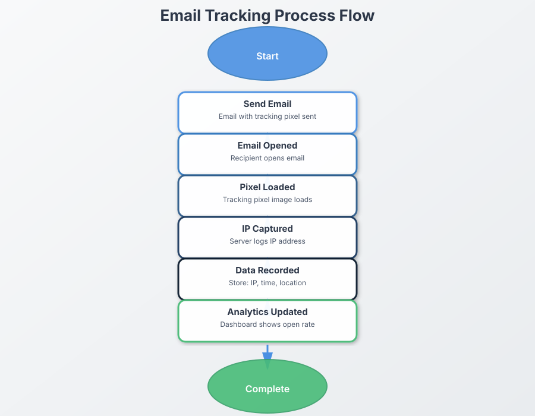

Table of Contents
- Introduction
- Email Tracking Fundamentals
- Implementation Techniques
- Privacy and 闁告艾鐗愰～?Considerations
- Key Metrics to Track
- Interpreting Tracking Data
- Using Tracking Data for 濞村吋锚鐎?
- Testing Your Email Tracking
- Conclusion
Introduction
IP Tracking Process Flow

Interactive Flow Diagram
Email tracking has become an essential tool for businesses. marketers. and individuals who want to understand how recipients engage with their messages. When implemented correctly. email t...
However, with great power comes great responsibility. Email tracking must be implemented thoughtfully, with consideration for privacy concerns, legal 闁告艾鐗愰～? and recipient expectations. This com...
Key Takeaway
Effective email tracking balances the need for engagement insights with respect for recipient privacy. The most successful tracking implementations are transparent, privacy-conscious, and focused on actionable metrics rather than invasive monitoring.
Email Tracking Fundamentals
Before diving into best practices, it's important to understand how email tracking actually works:
How Email Tracking Works
Email tracking relies primarily on two methods:
Pixel Tracking
A tiny, invisible 1閼? pixel image (often called a "tracking pixel" or "web beacon") is embedded in the email. When the recipient opens the email, this image is loaded from the server, registering the open event.
What it tracks:
- Open events
- Time of opening
- Device type
- Location (via IP)
- Email client used
Link Tracking
Links within the email are replaced with redirect URLs that record when a user clicks before sending them to the intended destination.
What it tracks:
- Click events
- Which links were clicked
- Time of clicking
- Device information
- Location data
- User journey after clicking
Limitations of Email Tracking
While powerful, email tracking has several important limitations to keep in mind:
Email Tracking Limitations
- Image Blocking: Many email clients block images by default, preventing pixel tracking
- Privacy Features: Services like Apple Mail Privacy Protection prevent accurate open tracking
- Offline Reading: If emails are read offline, tracking won't register until reconnection
- Preview Panes: Some preview panes may trigger open events without actual engagement
- False Positives: Security software and spam filters may trigger tracking events
Understanding these limitations is crucial for accurately interpreting tracking data and avoiding overreliance on specific metrics.
Implementation Techniques
Implementing email tracking effectively requires choosing the right approach for your specific needs:
Implementation Techniques
How to set up effective email tracking
Using Email Service Providers
Most email marketing platforms (like Mailchimp, SendGrid, or Campaign Monitor) offer built-in tracking that's easy to implement:
Provider Implementation
Advantages:
- Turnkey solution with minimal technical setup
- Robust Data Analytics dashboards
- Automatic 闁告艾鐗愰～?with best practices
- Easy 闁告帒妫涚划?based on engagement
Best for: Marketing campaigns, newsletters, and bulk emails
Custom Tracking Pixel Implementation
For individual emails or custom applications, a custom tracking solution might be necessary:
HTML for a basic tracking pixel
<img src="https://WhatsTheirIP.tech/track.php?id=unique_email_id" width="1" height="1" alt="" style="display:none">
Custom Implementation
Advantages:
- Complete control over tracking data
- Works with any email platform
- Can be tailored to specific tracking needs
- No dependency on third-party services
Best for: Individual emails, sales outreach, or custom applications requiring specific tracking parameters
CRM Integration
Many CRM systems offer email tracking that integrates with your existing contact database:
CRM-Based Tracking
Advantages:
- Tracking data tied directly to contact records
- Seamless workflow 闂傚棗妫欓崹?
- Automation capabilities based on email engagement
- Holistic view of customer interactions
Best for: Sales teams, customer service, and relationship management
Technical Best Practices
Regardless of your implementation approach, follow these technical best practices:
Use Unique Identifiers
Each email sent should have a unique identifier to accurately track individual message performance:
https://WhatsTheirIP.tech/track.php?id=user123_campaign456_20250513
This allows you to associate opens with specific recipients, campaigns, and sending dates.
Implement Fallback Tracking
Don't rely solely on pixel tracking. Use link tracking as a supplementary method to capture engagement when images are blocked.
When a recipient clicks a link but no open is recorded, you can infer that they likely have images disabled.
Optimize for Mobile
With over 60% of emails now opened on mobile devices, ensure your tracking methods work properly across mobile email clients. Test thoroughly on iOS Mail, Gmail app, and other popular mobile clients.
Consider Load Times
Tracking pixels should load quickly and not impact the user experience. Host your tracking server on reliable 闁糕晞娅ｉ、鍛媼閻愵剚鐓?with low latency.
Secure Your Tracking
Always use HTTPS for tracking URLs to ensure data security and avoid mixed content warnings in email clients.
<img src="https://WhatsTheirIP.tech/track.php?id=unique_email_id" ... >
Privacy and Compliance Considerations
Responsible email tracking requires careful attention to privacy concerns and legal requirements:
Privacy and Compliance
Ensuring ethical and legal tracking practices
Transparency is Essential
Be upfront about your tracking practices:
- Privacy Policy: Clearly disclose email tracking in your privacy policy
- Preference Center: Allow recipients to opt out of tracking specifically
- Email Footer: Consider mentioning that opens/clicks are tracked for performance measurement
Transparency Implementation Example
A compliant email footer might include:
"This email may use tracking technologies to understand how you interact with our content. You can update your preferences at any time or view our privacy policy ."
Legal Compliance
Different regions have different requirements for email tracking:
GDPR (EU) Requirements
- Legitimate interest or consent needed for tracking
- Clear privacy notice explaining tracking practices
- Option to withdraw consent/object to tracking
- Proper data protection for stored tracking information
CCPA/CPRA (California) Requirements
- Disclose tracking as "collection of personal information"
- Honor opt-out requests
- Track and disclose if data is sold/shared
- Provide data access/deletion rights
Legal Compliance Reminder
Email tracking laws evolve continuously. This guide provides general information. but you should consult with legal counsel to ensure 闁告艾鐗愰～?with current regulations in regions where your recipients are located.
Respectful Tracking Practices
Beyond legal 闁告艾鐗愰～? consider these ethical guidelines:
- Data Minimization: Only collect the tracking data you actually need and will use
- Purpose Limitation: Use tracking data only for the purposes you've disclosed
- Retention Limits: Don't store tracking data longer than necessary
- Avoid Creepiness: Don't reference tracking data in ways that might make recipients uncomfortable (e.g., "I noticed you opened my email three times yesterday")
Key Metrics to Track
Focus on meaningful metrics that drive insights and improvement:
Key Metrics
What to measure for meaningful insights
Open Rate
Formula: (Number of opens 濮?Number of delivered emails) 閼?100%
What it tells you: The percentage of recipients who opened your email
Benchmark: Industry averages range from 15-25%, but vary widely by sector
Limitations: May be inflated by multiple opens from the same person; affected by image blocking and privacy features
Click-Through Rate (CTR)
Formula: (Number of clicks 濮?Number of delivered emails) 閼?100%
What it tells you: The percentage of recipients who clicked at least one link
Benchmark: Industry averages range from 2-5%
Limitations: May be inflated by multiple clicks from the same person
Click-to-Open Rate (CTOR)
Formula: (Number of clicks 濮?Number of opens) 閼?100%
What it tells you: How effective your email content is at driving action once opened
Benchmark: Healthy range is 20-30%
Limitations: Dependent on accurate open tracking
Time to Open
What it tells you: How quickly recipients engage with your emails after delivery
Insight value: Helps understand optimal sending times and urgency perception
Usage: Most valuable when tracked over time to identify patterns
Device/Client Usage
What it tells you: Which devices and email clients your audience uses
Insight value: Guides optimization for the most common reading environments
Application: Informs design decisions and troubleshooting efforts
Geographic Distribution
What it tells you: Where your recipients are located when opening emails
Insight value: Helps with time zone optimization and regional targeting
Application: Particularly valuable for international audiences or distributed teams
Advanced Metrics
For more sophisticated email programs, consider tracking:
- Read Time: How long recipients spend reading your email
- Forward/Share Rate: How often emails are forwarded or shared
- Reply Rate: The percentage of emails that generate replies
- Engagement Over Time: How engagement patterns change throughout the customer lifecycle
- Conversion Rate: The percentage of recipients who complete desired actions after clicking through
Interpreting Tracking Data
Collecting data is only valuable if you can derive meaningful insights from it:
Using Tracking Data for Optimization
The ultimate goal of email tracking is to improve future performance:
Timing Optimization
Use open time data to refine your sending schedule:
- Identify days and times when your audience is most likely to engage
- Segment sending times based on recipient time zones and behavior patterns
- Experiment with follow-up timing based on initial open patterns
- Consider automated send-time 濞村吋锚鐎?if your ESP offers it
Device Optimization
Tailor your email design based on device usage patterns:
- Prioritize mobile 濞村吋锚鐎?if most opens occur on mobile devices
- Use responsive design that adapts to the most common screen sizes
- Consider device-specific versions for critical campaigns
- Test email rendering across the email clients your audience uses most
Segmentation Refinement
Use engagement data to create more targeted segments:
- Separate highly engaged users from occasional readers
- Create re-engagement campaigns for lapsed openers
- Identify content preferences based on link clicking patterns
- Develop VIP segments for your most engaged recipients
Content Refinement
Improve your messaging based on engagement signals:
- Analyze which subject lines drive the highest open rates
- Identify which CTAs generate the most clicks
- Refine content length based on average read times
- Test different content formats to see what drives engagement
Testing Your Email Tracking
Ensure your tracking is accurate and functioning as expected:
Basic Verification Tests
Before deploying tracking at scale, conduct these essential tests:
Email Client Testing
Send test emails to yourself and colleagues using different email clients:
- Test on webmail (Gmail, Yahoo, Outlook. com)
- Test on desktop clients (Outlook, Apple Mail, Thunderbird)
- Test on mobile apps (iOS Mail, Gmail app, Outlook mobile)
- Verify that tracking registers correctly across all platforms
Pay special attention to clients known for image blocking or privacy features.
Advanced Testing
For comprehensive verification, also test these scenarios:
- Preview pane behavior: Does the preview pane in Outlook trigger tracking events?
- Offline reading: What happens when emails are opened without an internet connection?
- Forwarded emails: Does tracking still function when an email is forwarded?
- Device switching: Can you accurately track when a user opens the same email on multiple devices?
- VPN/proxy impact: How do VPNs affect your location tracking accuracy?
Troubleshooting Common Issues
If your tracking isn't working as expected, check these common issues:
Missing Opens
- Verify tracking pixel is correctly implemented in HTML
- Check if recipient's email client blocks images
- Ensure tracking server is accessible and responding
- Look for 閻庣懓顦崣蹇旂附濡や礁澶嶉悘?TLS issues if using secure tracking
Inflated Open Counts
- Check for auto-loading preview panes
- Look for security software scanning links
- Verify that unique identifiers are properly implemented
- Filter out bot/automated opens if your system supports it
Conclusion
Email tracking, when implemented properly, provides valuable insights that can transform your email communication strategy. By following these best practices, you'll be able to gather actionable data while respecting recipient privacy and maintaining 闁告艾鐗愰～?with regulations.
Remember these key principles:
- Balance insight with privacy: Gather the data you need without being intrusive
- Focus on trends over individual behavior: Look for patterns that can drive strategic improvements
- Be transparent: Let recipients know how and why you're tracking engagement
- Test thoroughly: Ensure your tracking is accurate across devices and clients
- Act on insights: Use tracking data to continuously improve your email program
Take Action
Ready to implement professional email tracking? Try WhatsTheirIP.tech's email tracking tool to get started with easy-to-implement, privacy-conscious email tracking for your communications.